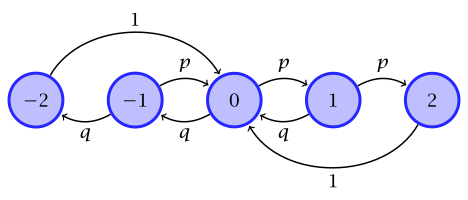
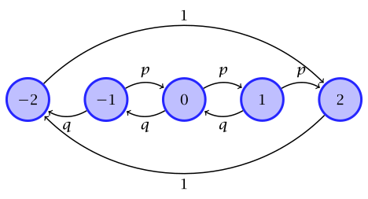
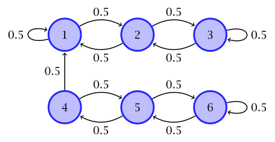

8 Markov chains
Let \(\ALPHABET X\) be a finite set. A stochastic process \(\{X_n\}_{n \ge 0}\), \(X_n \in \ALPHABET X\), is called a Markov chain if it satisfies the Markov property: for any \(n \in \integers_{\ge 0}\) and any \(x_{1:n+1} \in \ALPHABET X^{n+1}\), we have \[\begin{equation}\tag{Markov property}\label{eq:Markov} \PR(X_{n+1} = x_{n+1} \mid X_{1:n} = x_{1:n}) = \PR(X_{n+1} = x_{n+1} \mid X_n = x_n). \end{equation}\]
The variable \(X_n\) is called the state of the Markov chain at time \(n\); the set \(\ALPHABET X\) is called state space. The \(\eqref{eq:Markov}\) implies that the current state captures all the information from the past that is relevant for the future. Stated differently, conditioned on the present, the past is independent of the future.
Independence is a symmetric relationship. Thus, we expect the Markov property to also hold if time is reversed! Exercise 8.1 asks you to formally prove that.
We now present some examples of Markov chains arising in different applications.
Example 8.1 (Gilbert Elliot channel model for burst erasures)
Example 8.2 (Ehrenfest model of diffusion) The following simplified model of diffusion through a porous membrane was proposed by @Ehrenfest1907 to describe the exchange of heat between two systems at different temperature.
There are \(K\) particles that can either be in compartment \(A\) or compartment \(B\). At each time, a particle is picked at random and moved from its compartment to the other. Thus, if there are \(X_n = i\) particles in compartment \(A\) at time \(n\), then the next state \(X_{n+1}\) is either \(i-1\) (a particle was displaced from compartment \(A\) to \(B\)) with probability \(i/K\), or \(i+1\) (a particle was displaced from compartment \(B\) to \(A\)) with probability \((K-i)/K\).
Example 8.3 (Gambler’s ruin) Consider a gambler who is playing in a casino. The gambler starts with an initial fortune of $\(x_0\). At each time, the gambler places a bet where he wins $\(1\) with probability \(p\) and loses $\(1\) with probability \(1-p\). Thus, his fortune evolves as \[ X_{n+1} = X_n + Z_n \] where \(\{Z_n\}_{n \ge 0}\) is an i.i.d. sequence which takes values \(+1\) with probability \(p\) and \(-1\) with probability \(1-p\).
The gambler stops when his fortune is ruined, i.e., \(X_n = 0\). In some variations, the gambler may also stop when his fortune reaches a pre-specified amount of $\(K\).
See the following video from Veritasium for an excellent history of Markov chains and its applications
8.1 Time-homogeneous Markov chains
In this course, we will focus on time-homogeneous Markov chain. The Markov chain is called time-homogeneous if the right hand side of \(\eqref{eq:Markov}\) does not depend on \(n\). In this case, we describe the Markov chain by a state transition matrix \(P\), where \(P_{ij} = \PR(X_{n+1} = j | X_n = i)\). Such Markov chains can also be visualized using state transition diagrams as we illustrate in the examples below.
Example 8.4 (On-Off Markov chain) The On-Off Markov chain discussed earlier can be modelled with \(\ALPHABET X = \{0, 1\}\) and general transition probability matrix of the form. \[ P = \MATRIX{ 1 - a & a \\ b & 1 - b }. \] The transition matrix can be visualized as follows.

In spite of its simplicity, such simple on-off Markov chains are used in various applications including telecommunication systems, network traffic modeling, machine failure-repair models, gene activation, and others. Some properties of the on-off Markov chain are as follows:
If \(a + b = 1\), then both rows of the transition matrix are identical. Therefore, the Markov chain has no memory and is equivalent to a Bernoulli process with success probability \(a = 1-b\).
When \(a\) or \(b\) are small, the corresponding state is “sticky”, i.e., when the Markov chain enters a sticky state, it stays there for a long time.
Example 8.5 The Ehrenfest model of diffusion presented in Example 8.2 can be modelled as a Markov chain with state space \(\{0, 1, \dots, K\}\) and transition probability \[ P_{ij} = \begin{cases} i/K & j = i-1 \\ (K-i)/K & j = i + 1 \\ 0 & \text{otherwise}. \end{cases} \] The transition matrix can be visualized as follows.

Example 8.6 (Random walk in one dimension) Imagine a particle which moves in a straight line in unit steps. Each step is one unit to the right with probability \(p\) or one unit to the left with probabity \(q = 1-p\). It moves until it reaches one of two extreme points, which are called boundary points. The behavior of the particle at the boundary determines several different possibilities.
We will consider the case where the state space is \(\ALPHABET X = \{-2, -1, 0, 1, 2\}\) and the process starts in state \(0\).
Absorbing random walk: Assume that when the particle reaches a boundary state, it stays there from that time on. We may visualize the Markov chain as follows.
Absorbing random walk In this case, the transition matrix is given by \[ P = \MATRIX{ 1 & 0 & 0 & 0 & 0 \\ q & 0 & p & 0 & 0 \\ 0 & q & 0 & p & 0 \\ 0 & 0 & q & 0 & p \\ 0 & 0 & 0 & 0 & 1}. \]
Reflected random walk: Assume that when the particle reaches a boundary states, it is reflected and returns to the point it came from. We may visualize the Markov chain as follows.

Reflected random walk In this case, the transition matrix is given by \[ P = \MATRIX{ 0 & 1 & 0 & 0 & 0 \\ q & 0 & p & 0 & 0 \\ 0 & q & 0 & p & 0 \\ 0 & 0 & q & 0 & p \\ 0 & 0 & 0 & 1 & 0}. \]
Random walk with restart: Assume that when the particle reaches a boundary state, it restarts in the initial state. We may visualize the Markov chain as follows.

Random walk with restart In this case, the transition matrix is given by \[ P = \MATRIX{ 0 & 0 & 1 & 0 & 0 \\ q & 0 & p & 0 & 0 \\ 0 & q & 0 & p & 0 \\ 0 & 0 & q & 0 & p \\ 0 & 0 & 1 & 0 & 0}. \]
Random walk with periodic boundary: Assume that when the particle reaches a boundary state, it moves to the other boundary. We may visualize the Markov chain as follows.

Random walk with periodic boundary In this case, the transition matrix is given by \[ P = \MATRIX{ 0 & 0 & 0 & 0 & 1 \\ q & 0 & p & 0 & 0 \\ 0 & q & 0 & p & 0 \\ 0 & 0 & q & 0 & p \\ 1 & 0 & 0 & 0 & 0}. \]
Note that the gambler’s fortune in Example 8.3 is a random walk on non-negative integers \(\{0,1,2, \dots\}\) with absorption at \(0\). In the variation where the gambler stops when his fortune reaches $\(K\), it is a random walk over \(\{0,1,\dots,K\}\) with absorption at both ends: \(0\) and \(K\).
TODO: Add other examples
- Success runs
8.1.1 Properties of interest
Depending on the application, we are typically interested in the following properties of a Markov chain:
If the chain starts in state \(i\), what is the probability that after \(n\) steps it is in state \(j\)?
If the chain starts in state \(i\), what is the expected number of visits to state \(j\) in \(n\) steps?
What is the expected number of steps that it takes for a chain starting in state \(i\) to visit state \(j\) for the first time?
What is the average number of times that the chain is in state \(i\)? How does this depend on the initial state?
In the rest of this section, we will present results in Markov chain theory that answer the above questions.
8.2 State occupancy probabilities
Let \(μ^{(n)}\) denote the PMF of the state of the Markov chain at time \(n\). This is also called the state occupancy probababilites. We will think of of \(μ^{(n)}\) as a row vector. Then, by the law of total probability, we have \[ \PR(X_n = j) = \sum_{i \in \ALPHABET X} \PR(X_{n-1} = i) \PR(X_n = j | X_{n-1} = i) \] or, equivalently, \[ μ^{(n)}_j = \sum_{i \in \ALPHABET X} μ^{(n-1)}_i P_{ij} \] which can be written in matrix form as \[ μ^{(n)} = μ^{(n-1)} P \] and, by recusively expanding the right hand side, we have \[ μ^{(n)} = μ^{(0)} P^n. \]
We will abbreviate \([P^n]_{ij}\) as \(P^{(n)}_{ij}\).
Example 8.7 Numerically compute the state occupancy probabilities for the different examples of random walk presented in Example 8.6 when \(p = q = \tfrac 12\) for \(n \in \{1, \dots, 8\}\). In all cases, the initial probability \[ μ^{(0)} = \MATRIX{0 & 0 & 1 & 0 & 0 }. \]
Absorbing random walk: In this case, we have
- \(μ^{(0)} = \left[ \begin{array}{ccccc} 0 & 0 & 1 & 0 & 0 \\ \end{array} \right]\)
- \(μ^{(1)} = \left[ \begin{array}{ccccc} 0 & \frac{1}{2} & 0 & \frac{1}{2} & 0 \\ \end{array} \right]\)
- \(μ^{(2)} = \left[ \begin{array}{ccccc} \frac{1}{4} & 0 & \frac{1}{2} & 0 & \frac{1}{4} \\ \end{array} \right]\)
- \(μ^{(3)} = \left[ \begin{array}{ccccc} \frac{1}{4} & \frac{1}{4} & 0 & \frac{1}{4} & \frac{1}{4} \\ \end{array} \right]\)
- \(μ^{(4)} = \left[ \begin{array}{ccccc} \frac{3}{8} & 0 & \frac{1}{4} & 0 & \frac{3}{8} \\ \end{array} \right]\)
- \(μ^{(5)} = \left[ \begin{array}{ccccc} \frac{3}{8} & \frac{1}{8} & 0 & \frac{1}{8} & \frac{3}{8} \\ \end{array} \right]\)
- \(μ^{(6)} = \left[ \begin{array}{ccccc} \frac{7}{16} & 0 & \frac{1}{8} & 0 & \frac{7}{16} \\ \end{array} \right]\)
- \(μ^{(7)} = \left[ \begin{array}{ccccc} \frac{7}{16} & \frac{1}{16} & 0 & \frac{1}{16} & \frac{7}{16} \\ \end{array} \right]\)
- \(μ^{(8)} = \left[ \begin{array}{ccccc} \frac{15}{32} & 0 & \frac{1}{16} & 0 & \frac{15}{32} \\ \end{array} \right]\)
Reflected random walk: In this case, we have
- \(μ^{(0)} = \left[ \begin{array}{ccccc} 0 & 0 & 1 & 0 & 0 \\ \end{array} \right]\)
- \(μ^{(1)} = \left[ \begin{array}{ccccc} 0 & \frac{1}{2} & 0 & \frac{1}{2} & 0 \\ \end{array} \right]\)
- \(μ^{(2)} = \left[ \begin{array}{ccccc} \frac{1}{4} & 0 & \frac{1}{2} & 0 & \frac{1}{4} \\ \end{array} \right]\)
- \(μ^{(3)} = \left[ \begin{array}{ccccc} 0 & \frac{1}{2} & 0 & \frac{1}{2} & 0 \\ \end{array} \right]\)
- \(μ^{(4)} = \left[ \begin{array}{ccccc} \frac{1}{4} & 0 & \frac{1}{2} & 0 & \frac{1}{4} \\ \end{array} \right]\)
- \(μ^{(5)} = \left[ \begin{array}{ccccc} 0 & \frac{1}{2} & 0 & \frac{1}{2} & 0 \\ \end{array} \right]\)
- \(μ^{(6)} = \left[ \begin{array}{ccccc} \frac{1}{4} & 0 & \frac{1}{2} & 0 & \frac{1}{4} \\ \end{array} \right]\)
- \(μ^{(7)} = \left[ \begin{array}{ccccc} 0 & \frac{1}{2} & 0 & \frac{1}{2} & 0 \\ \end{array} \right]\)
- \(μ^{(8)} = \left[ \begin{array}{ccccc} \frac{1}{4} & 0 & \frac{1}{2} & 0 & \frac{1}{4} \\ \end{array} \right]\)
Random walk with restart: In this case, we have
- \(μ^{(0)} = \left[ \begin{array}{ccccc} 0 & 0 & 1 & 0 & 0 \\ \end{array} \right]\)
- \(μ^{(1)} = \left[ \begin{array}{ccccc} 0 & \frac{1}{2} & 0 & \frac{1}{2} & 0 \\ \end{array} \right]\)
- \(μ^{(2)} = \left[ \begin{array}{ccccc} \frac{1}{4} & 0 & \frac{1}{2} & 0 & \frac{1}{4} \\ \end{array} \right]\)
- \(μ^{(3)} = \left[ \begin{array}{ccccc} 0 & \frac{1}{4} & \frac{1}{2} & \frac{1}{4} & 0 \\ \end{array} \right]\)
- \(μ^{(4)} = \left[ \begin{array}{ccccc} \frac{1}{8} & \frac{1}{4} & \frac{1}{4} & \frac{1}{4} & \frac{1}{8} \\ \end{array} \right]\)
- \(μ^{(5)} = \left[ \begin{array}{ccccc} \frac{1}{8} & \frac{1}{8} & \frac{1}{2} & \frac{1}{8} & \frac{1}{8} \\ \end{array} \right]\)
- \(μ^{(6)} = \left[ \begin{array}{ccccc} \frac{1}{16} & \frac{1}{4} & \frac{3}{8} & \frac{1}{4} & \frac{1}{16} \\ \end{array} \right]\)
- \(μ^{(7)} = \left[ \begin{array}{ccccc} \frac{1}{8} & \frac{3}{16} & \frac{3}{8} & \frac{3}{16} & \frac{1}{8} \\ \end{array} \right]\)
- \(μ^{(8)} = \left[ \begin{array}{ccccc} \frac{3}{32} & \frac{3}{16} & \frac{7}{16} & \frac{3}{16} & \frac{3}{32} \\ \end{array} \right]\)
Random walk with periodic boundary: In this case, we have
- \(μ^{(0)} = \left[ \begin{array}{ccccc} 0 & 0 & 1 & 0 & 0 \\ \end{array} \right]\)
- \(μ^{(1)} = \left[ \begin{array}{ccccc} 0 & \frac{1}{2} & 0 & \frac{1}{2} & 0 \\ \end{array} \right]\)
- \(μ^{(2)} = \left[ \begin{array}{ccccc} \frac{1}{4} & 0 & \frac{1}{2} & 0 & \frac{1}{4} \\ \end{array} \right]\)
- \(μ^{(3)} = \left[ \begin{array}{ccccc} \frac{1}{4} & \frac{1}{4} & 0 & \frac{1}{4} & \frac{1}{4} \\ \end{array} \right]\)
- \(μ^{(4)} = \left[ \begin{array}{ccccc} \frac{3}{8} & 0 & \frac{1}{4} & 0 & \frac{3}{8} \\ \end{array} \right]\)
- \(μ^{(5)} = \left[ \begin{array}{ccccc} \frac{3}{8} & \frac{1}{8} & 0 & \frac{1}{8} & \frac{3}{8} \\ \end{array} \right]\)
- \(μ^{(6)} = \left[ \begin{array}{ccccc} \frac{7}{16} & 0 & \frac{1}{8} & 0 & \frac{7}{16} \\ \end{array} \right]\)
- \(μ^{(7)} = \left[ \begin{array}{ccccc} \frac{7}{16} & \frac{1}{16} & 0 & \frac{1}{16} & \frac{7}{16} \\ \end{array} \right]\)
- \(μ^{(8)} = \left[ \begin{array}{ccccc} \frac{15}{32} & 0 & \frac{1}{16} & 0 & \frac{15}{32} \\ \end{array} \right]\)
Example 8.8 Analytically compute the state occupancy probabilites for the on-off Markov chain of Example 8.4 when it starts from the initial probability distribution \(μ^{(0)}\).
Since \(μ^{(n+1)} = μ^{(n)} P\), we have \[\begin{align*} μ^{(n+1)}_0 &= μ^{(n)}_0 (1-a) + μ^{(n)}_1 b \\ &= μ^{(n)}_0 (1-a) + (1 - μ^{(n)}_0) b \\ &= μ^{(n)}_0 (1-a-b) + b. \end{align*}\] If \(a = b = 0\), then \(μ^{(n+1)}_0 = μ^{(n)_0 = \cdots = μ^{(0)}_0\). If not, we exploit the fact that \[ b = \frac{b}{a+b} - \frac{b}{a+b}(1-a-b) \] to recursively write \[\begin{align*} μ^{(1)}_0 &= μ^{(0)}_0 (1-a-b) + b \\ &= \left(μ^{(0)}_0 - \frac{b}{a+b}\right)(1-a-b) + \frac{b}{a+b} \end{align*}\] and \[\begin{align*} μ^{(2)}_0 &= μ^{(1)}_0 (1-a-b) + b \\ &= \left(μ^{(0)}_0 - \frac{b}{a+b}\right)(1-a-b)^2 + \frac{b}{a+b}(1-a-b) + b \\ &= \left(μ^{(0)}_0 - \frac{b}{a+b}\right)(1-a-b)^2 + \frac{b}{a+b} \end{align*}\] and, so on, to get \[\begin{align*} μ^{(n)}_0 &= μ^{(n-1)}_0 (1-a-b) + b \\ &= \left(μ^{(0)}_0 - \frac{b}{a+b}\right)(1-a-b)^n + \frac{b}{a+b}(1-a-b) + b \\ &= \left(μ^{(0)}_0 - \frac{b}{a+b}\right)(1-a-b)^n + \frac{b}{a+b}. \end{align*}\] Therefore, \[ μ^{(n)}_1 = 1 - μ^{(n)}_0 = \left(μ^{(1)}_0 - \frac{a}{a+b}\right)(1-a-b)^n + \frac{a}{a+b}. \]
The above analysis appears to be a bit of black magic. To understand what is going on, note that we are interested in computing \(μ^{(0)} P^n\). What is an efficient way to compute \(P^n\)? Eigen decomposition!. Since \(P\) is a row stochastic matrix, we have \(P \mathbf{1} = 1.\) Thus, \(λ_1 = 1\) is always an eigenvector of any transition matrix with eigenvector \(\mathbf{1}\).
For Example 8.4, we can explicitly compute all eigenvalues by finding the roots of the characteristic equation \[\begin{align*} \det(λI - P) &= \DET{λ - 1 + a & - a \\ -b & λ - 1 + b} \\ &= (λ-1 +a)(λ-1+b) - ab \\ &= (λ-1)^2 + (a+b)(λ-1) = (λ-1)(λ-1 + a + b). \end{align*}\] Thus, the eigenvalues are \(λ_1 = 1\) and \(λ_2 = 1 - a - b\).
For the special case of \(2 × 2\) transition matrices, we can find the second eigenvalue by observing that \(λ_1 = 1\) is always an eigenvalue and \(\TR(P) = λ_1 + λ_2 = 1 + λ_2\) or \(\det(P) = λ_1 λ_2 = λ_2\).
To find the eigenvector, we find a vector \(v\) such that \((λI - P)v = 0\).
- For \(λ_1 = 1\), we already know that \(v_1 = [1; 1]\) is an eigenvector.
- For \(λ_2 = (1-a-b)\), we have \[ λ_2I - P = \MATRIX{-b & -a \\ -b & -a}. \] Therefore, one possible eigenvector is \([a; -b]\).
Then, from spectral decomposition, we know that \[ P = V Λ V^{-1} \] where \(V = [v_1 v_2] = [1, a; 1, -b]\) and \(Λ = \diag(1, 1-a-b)\). Therefore, \[\begin{align*} μ^{(n)} &= μ^{(0)} P^n = μ^{(0)} V Λ^n V^{-1} \\ &= \MATRIX{ μ^{(0)}_0 & 1 - μ^{(0)}_0 } \MATRIX{1 & a \\ 1 & -b } \MATRIX{1 & 0 \\ 0 & 1 - a -b} \frac{1}{a+b} \MATRIX{b & a \\ 1 & -1 } \\[5pt] &= \MATRIX{\dfrac{1}{a+b} & μ^{(0)}_0 - \dfrac{b}{a+b} } \MATRIX{1 & 0 \\ 0 & 1 - a -b} \MATRIX{b & a \\ 1 & -1 } \\[5pt] &=\MATRIX{\dfrac{1}{a+b} & 0 \\ 0 & \left(μ^{(0)}_0 - \dfrac{b}{a+b}\right)(1-a-b)^n } \MATRIX{b & a \\ 1 & -1 } \\[5pt] &= \frac{b}{a+b} + \left(μ^{(0)}_0 - \dfrac{b}{a+b}\right)(1-a-b)^n \end{align*}\]
TODO: Add more examples!
8.3 Class structure
We say that a state \(j\) is accessible from state \(i\) (abbreviated as \(i \rightsquigarrow j\)) if there is exists an \(m \in \integers_{\ge 0}\) (which may depend on \(i\) and \(j\)) such that \([P^m]_{ij} > 0\). The fact that \(P^{(m)}_{ij} > 0\) implies that there exists an ordered sequence of states \((i_0, \dots, i_m)\) such that \(i_0 = i\) and \(i_m = j\) such that \(P_{i_k i_{k+1}} > 0\); thus, there is a path of positive probability from state \(i\) to state \(j\).
Accessibility is an transitive relationship, i.e., if \(i \rightsquigarrow j\) and \(j \rightsquigarrow k\) implies that \(i \rightsquigarrow k\).
Example 8.9 Consider the Markov chain shown below.

- Identify all states that are accessible from state \(1\).
- Identify all states from which state \(1\) is accessible.
NoteSolution- States accessible from state \(1\) are \(\{1,2,3\}\).
- States from which state \(1\) is accessible are \(\{1,2,3,4,5,6\}\).
Two distinct states \(i\) and \(j\) are said to communicate (abbreviated to \(i \leftrightsquigarrow j\)) if \(i\) is accessible from \(j\) (i.e., \(j \rightsquigarrow i\)) and \(j\) is accessible from \(i\) (\(i \rightsquigarrow j\)). Alternatively, we say that \(i\) and \(j\) communicate if there exist \(m, m' \in \integers_{\ge 0}\) such that \(P^{(m)}_{ij} > 0\) and \(P^{(m')}_{ji} > 0\).
For instance, in Example 8.9, state \(1\) communicates with state \(2\) but does not communicate with state \(5\).
Communication is an equivalence relationship, i.e., it is reflexive (\(i \leftrightsquigarrow i\)), symmetric (\(i \leftrightsquigarrow j\) if and only if \(j \leftrightsquigarrow i\)), and transitive (\(i \leftrightsquigarrow j\) and \(j \leftrightsquigarrow k\) implies \(i \leftrightsquigarrow k\)).
The states in a finite-state Markov chain can be partitioned into two sets: recurrent states and transient states. A state is recurrent if it is accessible from all states that are accessible from it (i.e., \(i\) is recurrent if \(i \rightsquigarrow j\) implies that \(j \rightsquigarrow i\)). States that are not recurrent are transient.
It can be shown that a state \(i\) is recurrent if and only if \[\sum_{m=1}^{\infty} P^{(m)}_{ii} = \infty.\]
States \(i\) and \(j\) are said to belong to the same communicating class if \(i\) and \(j\) communicate. Communicating classes form a partition the state space. Within a communicating class, all states are of the same type, i.e., either all states are recurrent (in which case the class is called a recurrent class) or all states are transient (in which case the class is called a transient class).
For example, in Example 8.9, there are two communication classes: \(\{1,2,3\}\) and \(\{4,5,6\}\). The communication class \(\{4,5,6\}\) is transient while the communication class \(\{1,2,3\}\) is recurrent.
A communicating class \(C\) is said to be closed if \[ i \in C \text{ and } i \rightsquigarrow j \implies j \in C. \] Thus, there is no escape from a closed class. For finite state spaces, a recurrent class is always closed and a transient class is never closed. But this is not the case for countable state Markov chains.
A state \(i\) is called absorbing if \(\{i\}\) is a closed class, i.e., if \(P_{ii} = 1\).
A Markov chain with a single communicating class (thus, all states communicate with each other and are, therefore, recurrent) is called irreducible.
The period of a state \(i\), denoted by \(d(i)\), is defined as \[d(i) = \gcd\{ t \in \integers_{\ge 1} : [P^t]_{ii} > 0 \}.\] If the period is \(1\), the state is aperiodic, and if the period is \(2\) or more, the state is periodic. It can be shown that all states in the same class have the same period.
A Markov chain is aperiodic, if all states are aperiodic. A simple sufficient (but not necessary) condition for an irreducible Markov chain to be aperiodic is that there exists a state \(i\) such that \(P_{ii} > 0\). In general, for a finite and aperiodic Markov chain, there exists a positive integer \(M\) such that \[ P^{(m)}_{ii} > 0, \quad \forall m \ge M, i \in \ALPHABET X.\]
8.4 Hitting times
We use the following notation:
- For any event \(E\), \(P_i(E)\) denotes \(\PR(E \mid X_0 = i)\)
- For any random variable \(Y\), \(\EXP_i[Y]\) denotes \(\EXP[Y \mid X_0 = i]\).
Let \(A\) be a subset of \(\ALPHABET X\). The hitting time \(H^A\) of \(A\) is a random variable \(H^A \colon \ALPHABET X \to \{0, 1, \dots \} \cup \{∞\}\) given by \[ H^A(ω) = \min\{n \ge 0 : X_n(ω) \in A\}. \] The standard convention is that \(H^A\) is taken to be \(∞\) if \(X_n \neq A\) for any \(n > 0\). For a state \(j \in \ALPHABET X\), we use the short-hand \(H^j\) to denote \(H^{\{j\}}\).
The probability that starting from state \(i\) the Markov chain ever hits \(A\) is then given by \[ h^A_i = P_i(H^A < ∞). \] This is called hitting probability. When \(A\) is a closed class, \(h^A_i\) is called the absorption probability.
The mean-time taken for the Markov chain to reach \(A\) is given by \[ m^A_i = \EXP_i[H^A] = \sum_{n=0}^{∞} n \PR_i(H^A = n). \] This is called the mean hitting time.
A remarkable property of Markov chain is that these quantities can be computed by solving a system of linear equations associated with the transition probability matrix \(P\).
Theorem 8.1 (Hitting probabilities) The hitting probabilities \(\{h^A_i\}_{i \in \ALPHABET X}\) satisfies the following system of linear equations: \[ h^A_i = \begin{cases} 1, & i \in A \\ \sum_{j \in \ALPHABET X} P_{ij} h^A_j, & i \not\in A \end{cases} \] When \(\ALPHABET X\) is finite, the above system has a unique solution; when \(\ALPHABET X\) is countable, the above system may have multiple solutions and the hitting probabilities correspond to the minimal non-negative solution.
When \(X_0 = i \in A\), the hitting time \(H^A = 0\), so \(h^A_i = 1\). This proves the first part of the formula.
For the second part, consider \(X_0 = i \not\in A\). Then \(H^A_i \ge 1\). By the Markov property, we have \[ \PR_i(H^A < ∞ \mid X_1 = j) = \PR_j(H^A < ∞) = h^A_j. \] Moreover, by the law of total probability, we have \[\begin{align*} h^A_i &= \PR_i(H^A < ∞) = \sum_{j \in \ALPHABET X} \PR_i(H^A < ∞, X_1 = j) \\ &= \sum_{j \in \ALPHABET X} \PR_i(H^A < ∞ \mid X_1 = j) \PR_i(X_1 = j) \\ &= \sum_{j \in \ALPHABET X} P_{ij} h^A_j. \end{align*}\]
Example 8.10 Consider a gambler’s ruin problem, where the gambler starts with $\(1\) and stops either when he is ruined or when his fortune reaches $\(K\).
Find the probability of ruin (i.e., the fortune gets absorbed in state \(0\) rather than state \(K\)).
For the ease of notation, we use \(h_i\) as a short-form for \(h^{\{0\}}_i\). The hitting probabilities satisy the linear system of equations:
\[\begin{align*} h_0 &= 1 \\ h_i &= ph_{i+1} + q h_{i-1}, \quad i \in \{1,\dots,K-1\} \\ h_K &= 0, \end{align*}\] where \(q = 1-p\).
The characteristic equation associated with the linear recurrence relationship is \[ λ = p λ^2 + q \] which has two distinct roots, \(λ_1 = 1\) and \(λ_2 = q/p\) if \(p \neq q\) and a double root at \(λ_1 = 1\) if \(p = q = \frac 12\). Therefore, the general solution is of the form \[ h_i = a λ_1^i + b λ_2^i = a + b\Bigl(\tfrac {q}{p} \Bigr)^i \] where we determine the coefficients \(a\) and \(b\) from the boundary conditions \(h_0 = 1\) and \(h_K = 0\). Solving for \(a\) and \(b\), we get that for \(p \neq q\), we have \[ h_i = \frac{1 - \Bigl(\frac qp\Bigr)^i}{1 - \Bigl(\frac qp\Bigr)^K} \] and for \(p = q = \frac 12\), we have \[ h_i = \frac{i}{K}. \]
Theorem 8.2 (Mean hitting times) The mean hitting times \(\{m^A_i\}_{i \in \ALPHABET X}\) satisfies the following system of linear equations: \[ m^A_i = \begin{cases} 0, & i \in A \\ 1 + \sum_{j \not\in A} P_{ij} m^A_j, & i \not\in A \end{cases} \] When \(\ALPHABET X\) is finite, the above system has a unique solution; when \(\ALPHABET X\) is countable, the above system may have multiple solutions and the mean hitting times correspond to the minimal non-negative solution.
The proof is similar to the proof of Theorem 8.1. When \(X_0 = i \in A\), the hitting time \(H^A = 0\), so \(m^A_i = 0\). This proves the first part of the formula.
For the second part, consider \(X_0 = i \not\in A\). Then \(H^A_i \ge 1\). By the Markov property, we have \[ \EXP_i[ H^A \mid X_1 = j] = 1 + \EXP_j[ H^A ] = 1 + m^A_j. \] Moreover, by the law of total probability, we have \[\begin{align*} m^A_i &= \EXP_i[ H^A ] = \sum_{j \in \ALPHABET X} \EXP_i[ H^A \mid X_1 = j ] \PR_i(X_1 = j) \\ &= \sum_{j \in \ALPHABET X} \EXP_i[ H^A \mid X_1 = j ] \PR_i(X_1 = j) \\ &= \sum_{j \in \ALPHABET X} P_{ij} \bigl[ 1 + m^A_j \bigr] \\ &= 1 + \sum_{j \not\in A} P_{ij} m^A_j. \end{align*}\]
8.5 First passage time and strong Markov property
Define the first passage time \[ f^{(n)}_{ij} \coloneqq P_i(T_j = n) = P_i(X_1 \neq j, \dots, X_{n-1} \neq j, X_n = j). \]
\(f^{(n)}_{ij}\) satisfies the following recursion.
- \(f^{(1)}_{ij} = P_i(X_1 = j) = P_{ij}\).
- And for \(n > 1\), \(f^{(n+1)}_{ij} = \sum_{k \neq j} P_{ik} f^{(n)}_{kj}\).
Let \[ f_{ij} = \sum_{n=1}^∞ f^{(n)}_{ij} = P_i(T_j < ∞) \] denotes the probability that a chain starting in \(i\) eventually visits \(j\). In particular \(f_{jj}\) denotes the probability that a chain starting in \(j\) will return to \(j\).
\(f_{ij}\) satisfy the following property.
\[\displaystyle P^{(n)}_{ij} = \sum_{m=1}^n f^{(m)}_{ij} P^{(n-m)}_{jj}.\]An immediate implication of the above is that if \(j\) is an absorbing state then \(P^{(n)}_{ij} = \sum_{m=1}^n f^{(m)}_{ij} = P_i(T_j \le n).\)
Let \(N^{(n)}_j = \sum_{m=1}^{n} \IND\{X_m = j\}\) denote the number of visits to state \(j\) in \(n\) steps. Define \[ G_{ij}^{(n)} = \EXP_i[ N^{(n)}_j ] = \sum_{m=1}^n P^{(m)}_{ij} \] to be the expected number of visits to state \(j\) in \(n\) steps, starting in \(i\).
Let \(N_j = \lim_{n \to ∞} N^{(n)}_j \sum_{m=1}^∞ \IND\{X_m = j \}\) denote the number of visits to state \(j\). Similarly, define \[ G_{ij} = \EXP_{i}[N_j] = \lim_{n \to ∞} G_{ij}^{(n)} = \sum_{m=1}^{∞} P^{(m)}_{ij} \] to denote the expected number of visits to state \(j\) for a chain starting in \(i\).
A state \(j\) is recurrent if \(f_{jj} = 1\) and transient if \(f_{jj} < 1\).
A state is called periodic if \(f_{ii}^(n)\) is non-zero only for multiples of some smallest integer \(d\), \(d > 1\).
For every transient state \(j\), we have for every \(i\), \(P_i(N_j < ∞) = 1\) and \[ G_{ij} = \dfrac{f_{ij}}{1 - f_{jj}}.\] On the other hand, if \(j\) is recurrent, then \(P_j(N_j = ∞) = 1\) and \(G_{jj} = ∞\). Moreover, \[ P_i(N_j = ∞) = P_i(T_j < ∞) = f_{ij}. \] So, if \(f_{ij} = 0\), then \(G_{ij} = 0\) while if \(f_{ij} = ∞\) then \(G_{ij} = ∞\).
Thus, a state \(i\) is recurrent if and only if \[G_{ii} = \sum_{n=1}^∞ P^{(n)}_{ii} = ∞. \]
A state \(j\) is said to be accessible from \(i\) (abbreviated as \(i \rightsquigarrow j\)) if there is an ordered string of notes \((i_0, \dots, i_m)\) such that \(i_0 = i\) and \(i_m = j\) and \(P_{i_k i_{k+1}} > 0\). Equivalently, \(i \rightsquigarrow j\) if there exists a \(m\) such that \(P^{(m)}_{ij} > 0\).
Accessibility is an transitive relationship, i.e., if \(i \rightsquigarrow j\) and \(j \rightsquigarrow k\) implies that \(i \rightsquigarrow k\).
If \(f_{ij} > 0\) but \(f_{ji} < 1\), then \(i\) is transient.
If \(i\) is recurrent and \(i \rightsquigarrow j\). Then, \(j\) is also recurrent and \(f_{ij} = f_{ji} = 1\).
A subset \(C\) of \(\ALPHABET X\) is said to be closed if no state inside \(C\) can lead to any state outside \(C\), i.e., \[ f_{ij} = 0, \quad \forall i \in C \text{ and } j \not\in C. \]
A closed set \(C\) is called irreducible if \(i \rightsquigarrow j\) for all \(i,j \in C\). Thus, if \(C\) is an irreducible set, then all states in \(C\) are either recurrent or transient.
Consequently, if \(C\) is an irreducible and closed set of recurrent states. Then for all \(i,j \in C\),
- \(f_{ij} = 1\)
- \(P_i(N_j = ∞) = 1\)
- \(G_{ij} = ∞\)
If \(C\) is a finite irreducible closed set of states. Then every state in \(C\) is recurrent.
Let \(\ALPHABET X_T\) and \(\ALPHABET X_R\) denote the set of transient and recurrent states. The set \(\ALPHABET X_R\) can be paritioned into a finite or countable number of irreducible closed sets \(C_1\), \(C_2\), \(\dots\).
8.6 Expected duration of play
Let’s start with a simple example. Suppose we toss a coin multiple times and stop at a heads. What are the expected number of tosses until stopping?
From elementary probability we know that the number of tosses until stopping is a geometric random variable. However, we will model this using a Markov chain where the state denotes the number of consecutive heads so far. Let \(p\) denote the probability of heads and \(q = 1-p\) denote the probability of tails. Then, the Markov chain model is as follows.

Let \(v_i\) denote the expected number of tosses until stopping when starting at state \(i\). Then, we have \[\begin{align*} v_0 &= 1 + q v_0 + p v_1, \\ v_1 &= 0. \end{align*}\] Solving this system of equations, we get \(v_0 = 1/(1-q) = 1/p\).
Now, let’s try a variation of the above model. Suppose we toss a coin multiple times and stop at two heads. What are the expected number of tosses until stopping.
We can model this in the same manner as the before, where the state denotes the number of consecutive heads so far. The Markov chain is as follows:
As before, let \(v_i\) denote the expected number of tosses until stopping when starting at state \(i\). Then, we have \[\begin{align*} v_0 &= 1 + q v_0 + p v_1, \\ v_1 &= 1 + q v_0 + p v_2, \\ v_2 &= 0. \end{align*}\] Solving this system of equations, we get \(v_0 = 1/(1-p)\).
We can generalize these ideas to find time of hitting a state.
8.7 Stationary distribution
A distribution \(π\) is said the be a stationary distribution if \[ π = π P. \]
Stationary distributions can be computed by solving balance equations.
Let \(C\) be an irreducible class of a Markov chain. Then, there is a unique stationary distribution \(π\) that assigns positive probability only to states in \(C\).
If \(π_1\) and \(π_2\) are stationary distributions of a Markov chain and \(α \in (0,1)\), then \(α π_1 + (1-α) π_2\) is also a stationary distribution.
Thus, if a Markov chain has a single irreducible class, then it has a unique stationary distribution; if it has multiple irreducible classes, then it has uncountable number of stationary distributions.
8.8 Limiting distribution
Suppose \(j\) is a transient state. Then, we know that \(N_j < ∞\) and \(G_{ij} < ∞\). Therefore, \[ \lim_{n \to ∞} \frac{N^{(n)}_{j}}{n} = 0, a.s., \quad\text{and}\quad \lim_{n \to ∞} \frac{G^{(n)}_{ij}}{n} = 0, \forall i \in \ALPHABET X. \]
Suppose \(j\) is a recurrent state. Then, \[ \lim_{n \to ∞} \frac{N^{(n)}_{j}}{n} = μ_j, a.s., \quad\text{and}\quad \lim_{n \to ∞} \frac{G^{(n)}_{ij}}{n} = μ_j, \forall i \in \ALPHABET X \] where \(μ_j = \EXP_{j}[T_j]\) is the mean return time to state \(j\).
A Markov chain is said to have a steady state distribution if \(π_n\) converges to a limit as \(n \to ∞\) and the limit does not depend on the initial distribution \(π_0\).
A Markov chain has a steady state distribution if it is ergodic. We can find the steady state distribution by solving the balance equation: \(π = π P\).
Exercises
Exercise 8.1 (Time reversal of Markov chains) Let \(\{X_n\}_{n \ge 1}\) is a Markov chain. Show that for any \(N > n\), \[ \PR(X_n = x_n \mid X_{n+1:N} = x_{n+1:N}) = \PR(X_n = x_n \mid X_{n+1} = x_{n+1}). \] Thus, a time reversed Markov chain is also Markov.
Exercise 8.2 Suppose \(\{X_n\}_{n \ge 0}\) is a Markov chain with transition matrix \(P\). For a fixed positive integer \(k\), define \(Y_n = X_{kn}\). Show that \(\{Y_n\}_{n \ge 0}\) is a Markov chain with transition matrix \(P^k\).
Exercise 8.3 Suppose a (6-sided) die is ‘fixed’ so that two consecutive rolls cannot have the same outcome. In particular, if the outcome of a roll is \(i\), then the next roll cannot be \(i\); all \(5\) other outcomes are equally likely.
- Model the above as a Markov chain.
- If the outcome of the first roll is \(1\), what is the probability that the outcome of the \(n\)th roll is also \(1\)?